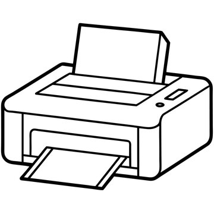

Computer Starter Kit
This is the best computer money can buy, if you don't have much money
- Computer
- Monitor
- Keyboard
- Mouse

Printer
Only capable of printing. ASCII art.
- Paper and ink not included
Printer 2
A la 1989.
Mouse
A computer mouse is a pointing device (hand control) that detects two-dimensional motion relative to surface. This motion is typically translated into the motion of a pointer on a display, which allows a smooth control of the graphical user interface. Clickity Click!
Macintosh 8500
This is the best computer money can buy, if you don't have much money. This computer was state of the art in 1995.